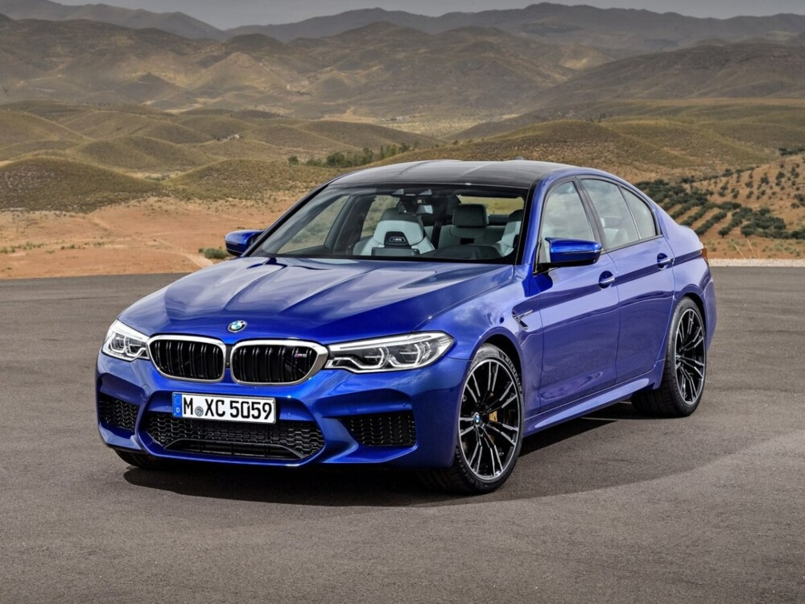

BMW M5 F90 (2017–2023) — это современная и высокотехнологичная версия легендарного спортивного седана, которая продолжает традиции M5, предлагая выдающуюся производительность и комфорт.
| Параметр | Значение |
|---|---|
| Годы производства | 2017-2023 |
| Типы кузова | Полноразмерный спортивный седан |
| Двигатели | Бензиновые 4,4-литровыe модели V8 с 2-мя турбинами |
| Мощность | 625 л.с. |
| Привод | Полный |
| Трансмиссия | 8-ступенчатый автомат |